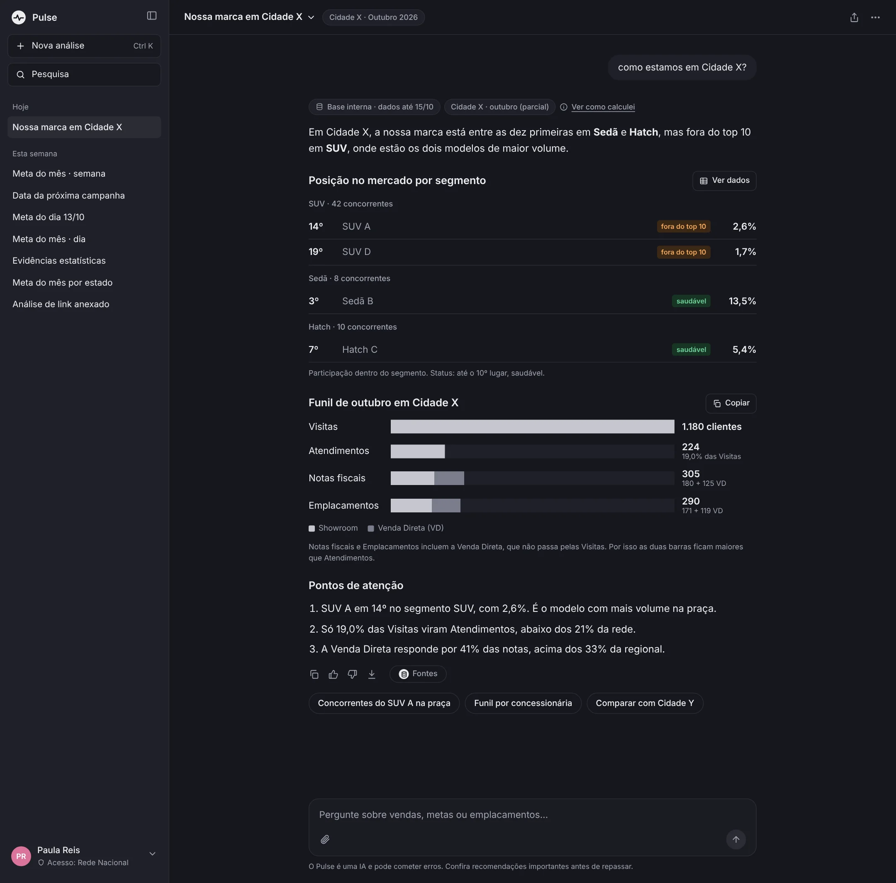

Product design lead que transforma problemas complexos em produtos que as pessoas usam
Mais de 6 anos em discovery, research e estratégia de produto em saúde, agronegócio, indústria, mobilidade e seguros. Foco no tipo de problema e no resultado mensurável, com o setor como contexto.
Trabalhos em destaque
Cinco cases com processo e resultado. Cada um abre numa página com o projeto completo.
-
Automotivo, interface de IA conversacional
Redesenho de um assistente de IA para a resposta ganhar o peso
Para uma montadora, comparei um assistente de IA analítico com quatro referências e redesenhei a interface: o peso visual saiu da pergunta e foi para a resposta, com fontes, próximas ações e status.


13layouts e estados desenhados
-
Saúde e nutrição animal
Do discovery ao MVP: rastreando a custódia do gado no campo
Para uma multinacional de saúde e nutrição animal, levamos a rastreabilidade do discovery a um MVP testado em campo: 100% das trocas de custódia rastreadas em 16 fazendas.
100%das trocas de custódia rastreadas
-
Agronegócio
Um assistente virtual para colaboradores, clientes e fornecedores
Dois anos desenhando e curando um assistente conversacional numa multinacional do agronegócio: tempo de resposta até 99% menor, 80% de CSAT e 500 colaboradores atendidos em 30 dias.
−99%de tempo de resposta no autoatendimento
-
Automotivo, métricas e experimentação
Como provar que o resultado veio do produto
Discovery de indicadores com seis áreas de uma montadora: 11 hipóteses testáveis, um framework de métricas em seis níveis e um método para separar o efeito da plataforma do efeito do mercado.
11hipóteses testáveis, 24 métricas em 6 níveis
-
Indústria
Diagnóstico do ciclo financeiro de uma indústria
Um mês dentro de quatro times financeiros de uma multinacional: 89 atritos mapeados, 84 atividades, 16 entrevistas e um roadmap priorizado com as próprias áreas.
89atritos mapeados, 84 atividades, 16 entrevistas
Sobre
Comecei em consultoria cedo e fiquei. Isso me ensinou a entrar em contextos novos, aprender rápido e sustentar decisões diante de quem conhece o negócio há vinte anos. O que mais me interessa é pesquisa e diagnóstico: antes de desenhar, descubro onde o processo trava.
Lidero design de produtos novos à evolução de operações antigas e mentoro designers mais novos no time. Operações complexas me ensinaram a desenhar para quem depende do produto todo dia, a mesma disciplina que levo a produtos de consumo: adoção, task completion, CSAT e experimentação.
- Experiência
- Mais de 6 anos
- Foco
- Discovery, research e estratégia de produto
- Base
- Belo Horizonte, remoto
Confidencialidade: nomes de clientes e alguns detalhes foram omitidos ou alterados. Os números vêm dos projetos originais; as telas do case 01 foram recriadas com dados fictícios. Conto mais em conversa.
Tem um problema difícil? Fale comigo.
Belo Horizonte, Brasil (UTC−3). Aberta a trabalho remoto.